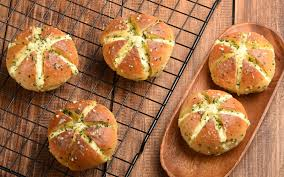

Diposting pada tanggal 14 September 2020 pukul 21.00 WIB

Korean Garlic Cheese Bread, jajanan kaki lima asal Korea Selatan yang viral di Indonesia karena rasanya
yang unik.
Berbeda dengan garlic bread ala Eropa, Garlic bread Korea memiliki tekstur yang empuk dan creamy
sedangkan garlic bread Eropa punya tekstur yang renyah dan gurih.
Korean Garlic Chesee Bread merupakan olahan roti, seperti roti burger, tapi dipotong enam sisi yang
saling menyilang menyerupai siung bawang putih yang diberi keju dan dilumuri bumbu dan dipanggang. Krim
keju yang meleleh dengan sensasi rasa bawang putih yang gurih memberikan sensasi yang berbeda dengan
jenis roti lainnya.
Sejumlah sumber menyebutkan bahwa Garlic bread ini berasal dari Kota Gangneung yang berada di Provinsi
Gangwon. Makanan ini awalnya merupakan kuliner kaki lima Korea atau street food.
Dari Kota Gangneung, roti krim keju bawang putih itu dibawa ke pusat kuliner Gangnam, sebuah distrik hype
dan terkenal di Seoul. Dari situ cheese garlic bread semakin diminati orang Korea dan masuk dalam daftar
menu baru di banyak cafe.
Alasan Garlic bread ini bisa trend adalah karena berbagai varian roti merupakan panganan yang sudah lama
akrab dengan orang Korea Selatan. Sedangkan bawang putih adalah bumbu wajib yang tak pernah absen dalam
setiap makanan baik dimakan mentah atau dipanggang.
Selain rasa yang nikmat dan bentuk yang unik, pemasaran yang tepat membuat kuliner ini semakin populer.
Pemasaran yang mengandalkan media sosial seperti Instagram juga membuat panganan ini viral bahkan sampai
ke Indonesia. Apalagi kini Korea tengah menjadi sorotan di dunia hiburan lewat K-Pop.
Di Indonesia, Korean cream cheese garlic banyak dijajakan di media sosial dan semakin diminati banyak
orang. Selain itu Anda juga bisa membuatnya sendiri di rumah.
(Klik "Recipes" untuk tahu cara membuat olahan ini.)